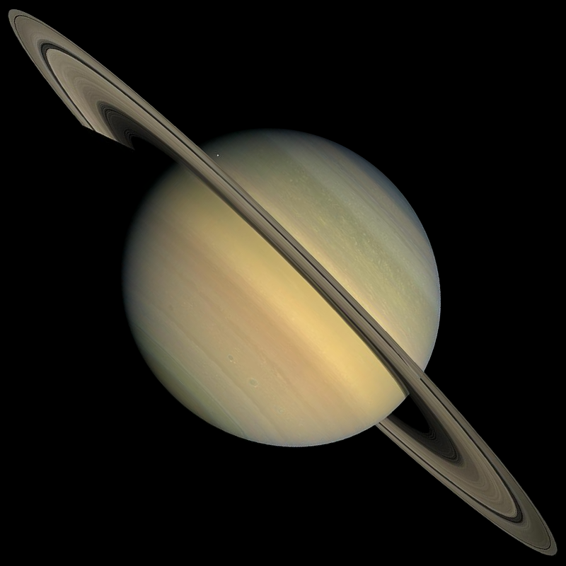

Saturn
Date of Discovery:
Unknown
Discovered By:
Known by the Ancients
Average Oribit Distance:
886,489,415 miles
Mean Orbit Velocity:
21,562 mph
Orbit Eccentricity:
0.05386179
Equatorial Inclination:
26.7 degrees
Equatorial Radius:
36,183.7 miles
Equatorial Circumference:
277,348.8 miles
Volume:
198,439,019,647,006 miles cubed
Surface Area:
16,452,636,641 square miles
Surface Gravity:
34.3 ft/s squared
Escape Velocity:
80,731 mph
Atmospheric Constituents:
Hydrogen, Helium